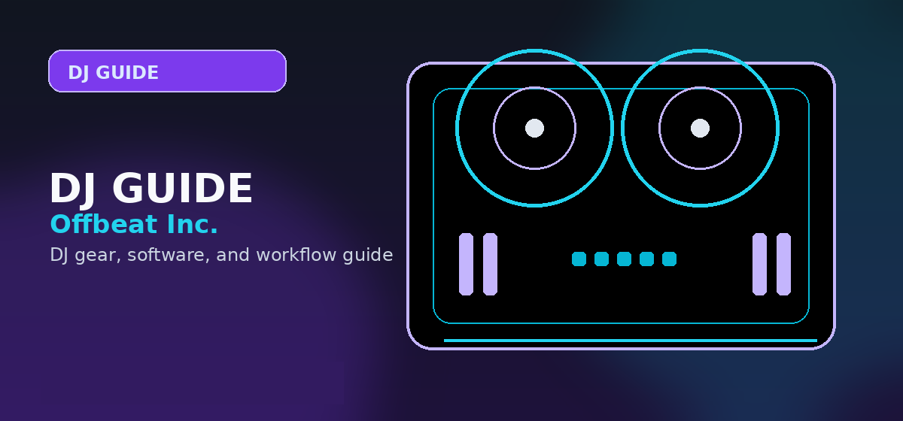

Best DJ Stands & Accessories 2026: Elevate Your Setup for Peak Performance
Best DJ stands and accessories 2026 — laptop stands, controller stands, cable management. Expert picks with pros, cons, and pricing.

Disclosure: This page uses affiliate links. We may earn a commission at no extra cost to you. Full disclosure →
In 2026, the gap between bedroom setups and professional booths has narrowed. With budget-friendly controllers now featuring pro-grade touch-capacitive jogs and integrated audio interfaces, the bottleneck for many DJs is no longer the gear itself, but the ergonomics of their workspace. A poorly positioned laptop or a cluttered web of cables doesn't just look amateur—it kills your creative flow and risks costly equipment failure. Whether you are a mobile DJ hitting the club circuit or a hobbyist optimizing a home studio, the right stands and cable management tools are essential for stability, airflow, and accessibility. This guide breaks down the best accessories to keep your gear secure and your performance seamless, ensuring your physical environment matches the high-tech capabilities of your 2026 hardware.
The Essential Laptop Stand: Height and Airflow
Your laptop is the brain of your operation, but placing it flat on a table leads to neck strain and overheating. In 2026, the gold standard is the adjustable aluminum stand. The Hercules Laptop Stand (approx. $59) remains a top pick for its rugged stability and high-grip surface, preventing "laptop slide" during intense transitions. For those on a tighter budget, generic reinforced aluminum folding stands (approx. $25) offer surprising portability for mobile gigs. The primary goal is to bring the screen to eye level while leaving a gap underneath for ventilation. Since modern DJ software can be CPU-intensive, maintaining airflow is critical to prevent thermal throttling mid-set.
Heavy-Duty Controller Stands: Stability First
A wobbly controller is a DJ's worst nightmare, especially when manipulating faders or using touch-capacitive wheels. For permanent home setups, the Odyssey Controller Stand (approx. $120) provides a rock-solid foundation with adjustable height settings to prevent lower back pain. Mobile DJs should opt for On-Stage Stands Folding Tables (approx. $80), which offer a quick setup and a sturdy surface that won't vibrate during heavy bass drops. The key in 2026 is choosing a stand with a non-slip top; as controllers become more feature-dense and slightly heavier, ensuring the unit doesn't shift during a performance is non-negotiable for maintaining a professional "booth feel."
Mastering Cable Management: The Pro Secret
Nothing screams "beginner" like a "spaghetti pile" of XLR and USB cables. Effective cable management protects your wires from fraying and prevents accidental unplugging. Heavy-duty Velcro Cable Ties (approx. $15 for a pack) are the industry standard—avoid plastic zip ties, as you'll need to rearrange your gear frequently. For a permanent desk setup, J-Channel Cable Raceways (approx. $30) adhered to the underside of your table keep power bricks and excess lengths hidden and dust-free. By routing your cables cleanly, you not only improve the aesthetics of your setup but also significantly reduce the risk of tripping hazards during a live performance.
Ergonomic Accessories for Long Sets
Beyond the big stands, small ergonomic additions make a massive difference during four-hour sets. Under-desk Headphone Hangers (approx. $12) keep your monitors within reach but off the workspace, freeing up valuable real estate. Additionally, investing in Anti-Fatigue Floor Mats (approx. $45) is a game-changer for DJs who perform standing up, reducing joint pressure and fatigue. In 2026, we also see a rise in modular desk organizers that hold USB drives and adapters in one place. These small investments ensure that your physical comfort keeps pace with your technical skill, allowing you to focus entirely on the mix rather than your aching back.
2026 Setup Recommendation Table
| Product | Best For | Est. Price | Top Pro | Main Con |
|---|---|---|---|---|
| Hercules Laptop Stand | Professional Stability | $59 | Zero-slip grip | Bulkier to transport |
| Odyssey Controller Stand | Home Studio | $120 | Extreme rigidity | Not portable |
| On-Stage Folding Table | Mobile/Gigging | $80 | Setup in < 2 mins | Less height adjustability |
| Velcro Cable Ties | General Organization | $15 | Reusable and flexible | Requires manual effort |
| J-Channel Raceways | Clean Aesthetics | $30 | Hides all cable clutter | Permanent adhesive |
Shop on Amazon
Complete your DJ booth — stands, cases, and accessories on Amazon.
Also Available on zZounds
Full DJ accessory catalog — financing available on select items.
Frequently Asked Questions
What DJ accessories do I really need?
Essential DJ accessories: a DJ stand or table (to protect your back), headphone splitter, RCA cables, power strip, and a laptop stand if DJing from a laptop.
What is a good DJ stand for a home setup?
The Gravity MS 4322 B and Ultimate Support JS-TS90 are popular DJ stands under $100. For home studio use, a sturdy desk with cable management works just as well.
How tall should a DJ stand be?
Your DJ gear should be at elbow height when standing — usually around 36–42 inches (91–107cm) depending on your height. Standing height prevents back pain during long sets.
Do I need a laptop stand for DJing?
A laptop stand is highly recommended if your DJ software is on a laptop. It keeps screens at eye level, improves airflow, and reduces neck strain during long sets.
What cables do DJs need?
Essential: XLR cables (main output to speakers), RCA cables (booth output), USB cable (controller to laptop), and 3.5mm to 6.35mm adapter (headphone). Always carry spares to gigs.